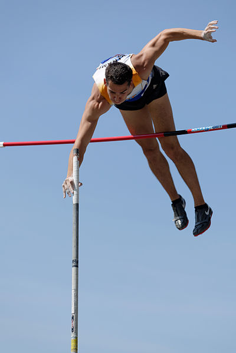

Es la capacidad de lograr una coordinación muy fina de fases motoras y movimientos parciales individuales la cual se manifiesta en una gran exactitud y economía del movimiento total.
A modo de ejemplo imaginamos a un saltador de garrocha (pértiga) realizando su salto, moviendo cada segmento de su cuerpo en forma diferencial a medida que avanza hacia el listón, salta y cae sobre el colchón.
En esta disciplina los atletas deben coordinar de manera precisa y fluida los movimientos de cada segmento de su cuerpo a medida que avanzan hacia el listón, saltan y aterrizan en el colchón. La diferenciación implica controlar y ajustar de manera individualizada los movimientos de las piernas, los brazos, el tronco y la cabeza para lograr una técnica eficiente y un salto exitoso.
La importancia en el deporte radica en que permite a los atletas realizar movimientos con gran exactitud y economía, maximizando la eficiencia del movimiento total. En el salto con garrocha una adecuada diferenciación de los movimientos ayuda a generar la velocidad y la fuerza necesaria para superar el listón y realizar una caída segura.
La diferenciación también es importante en otros deportes que requieren movimientos complejos y coordinados, como la gimnasia artística o la danza. En estas disciplinas los deportistas deben controlar y diferenciar cada parte de su cuerpo para ejecutar movimientos precisos y expresivos. Esta capacidad permite realizar secuencias coreografiadas con fluidez y armonía exhibiendo un alto nivel de control motor y destreza técnica.
Además, la diferenciación contribuye a prevenir lesiones y mejorar la seguridad en la práctica deportiva. Al coordinar de manera diferenciada los movimientos los deportistas pueden evitar tensiones y sobrecargas innecesarias en determinadas partes del cuerpo distribuyendo de manera equilibrada las cargas y minimizando el riesgo de lesiones.

Foto de Marie-Lan Nguyen disponible en Wikimedia Commons
{kind=link}